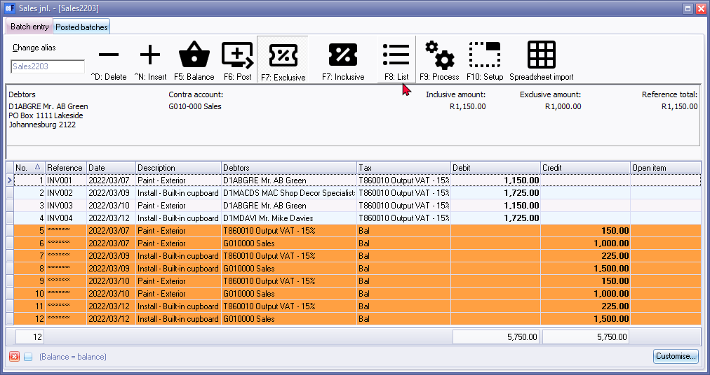
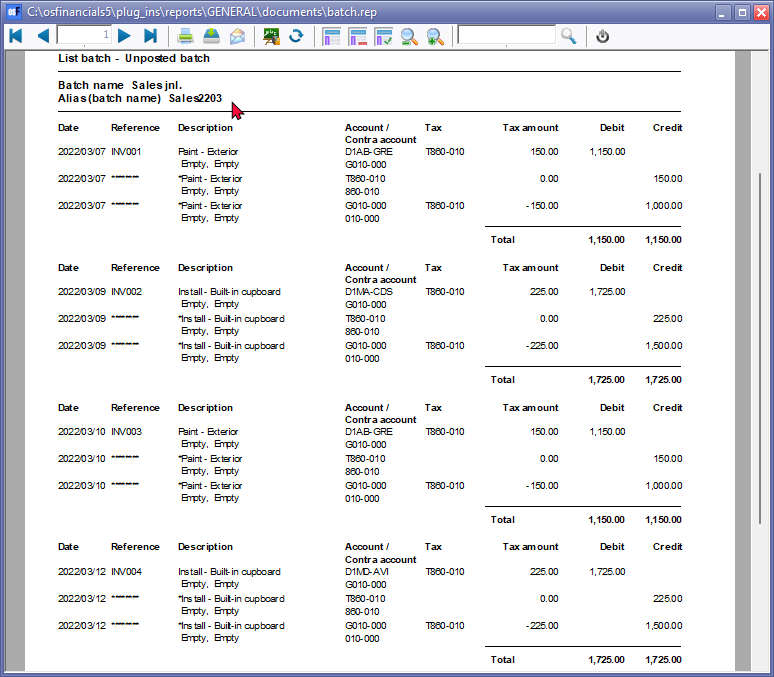

List batch
After entering all your transactions in a batch, and before updating or posting the transactions to the ledger, you need to print a list of the transactions entered in the batch.
|
|
It is recommended to review the batch list and edit or correct any transactions before proceeding to post the batch (journal). This ensures that the transactions are accurate and complete before being updated to the ledger. Printing the list of transactions allows you to have a physical record that can be used for reference, auditing, or reconciliation purposes. |

|
|
Once a batch is posted, any errors or corrections would need to be addressed through additional journal transactions or by reversing the posted batch and making the necessary corrections before reposting it. It's important to ensure accuracy in the initial batch entry and review process to minimize the need for subsequent corrections. |

|
|
Using the printed batch list as an index or cover for the supporting source documents is a good practice. It provides a clear connection between the batch list and the underlying transactions, serving as evidence or proof of the recorded transactions. This can be helpful during audits or when reviewing the accuracy and completeness of the batch. Keeping the supporting documents organized and easily accessible alongside the printed batch list helps maintain proper documentation and facilitates efficient reference and verification processes. |

|
|
Tax authorities and legislation in various jurisdictions often prescribe specific retention periods for financial documents and records. These retention periods determine how long businesses are required to keep their documents as proof of profits, deductions, and other financial transactions. The purpose of these regulations is to ensure that businesses maintain proper records for auditing, compliance, and legal purposes. The retention periods can vary depending on the jurisdiction and the specific type of document. It's important for businesses to familiarize themselves with the applicable regulations in their jurisdiction and ensure that they comply with the required retention periods. This may involve retaining documents such as invoices, receipts, bank statements, financial statements, and other supporting documentation for a certain number of years. By adhering to the prescribed retention periods, businesses can meet their legal obligations, facilitate audits or inspections, and maintain a reliable and accurate record-keeping system. It's always recommended to consult with tax professionals or legal advisors to ensure compliance with the specific requirements of your jurisdiction. |

You may list the entries at any time when transactions have been entered in a batch, even if the batch has been balanced or not. Before printing a list of your batch transactions, you need to decide if you wish to include the balancing entries. Should you wish to include the balancing entries on your batch list, you need to first balance the batch.
To list transactions entered in a batch:
- Once the transactions are entered in a batch, you may print a list of transactions entered in the batch to check the transactions.

- Click on the F8:List icon to print a list of the transactions in the batch.
|
|
You may also right-click on the selected batch (journal) on the "Batch type" selection screen, and select the Print option on the context menu. |
|
|
You may click on the F9:Process icon. You then need to select the List batch option from the list of batch processing options. |
- An example of the transactions in the "List batch - - Unposted batch" report, is as follows:

|
|
Check that the "Alias (batch name)" is displayed on correctly on the report. |
- The details of the transactions, displayed in nine (9) columns, are as follows:
- Date - This is the transaction date as entered in the date field.
- Reference number - This is usually refers to the source document from which the transaction is entered (e.g. the cheque number, deposit number, invoice number, supplier invoice number, etc. as entered in the "Reference" field.
|
|
If a batch is balanced, the reference number will be indicated by eight asterisks (********). |
|
|
This refers to the contra account and cannot not, under any circumstances, be over typed or changed before you post the batch. |
- Description - This is the description of the transaction as entered in the description field.
|
|
This detail should be entered sensibly so as to enable any person or independent auditor to determine the nature of the transaction (what was paid, purchased, sold, etc. |
|
|
When a Creditor account or a Debtor account was selected, the descriptions should also make sense for the creditor or debtor if Creditor Remittance advises or Debtor statements are sent. |
- Account - The account code for the selected General ledger, Creditor or Debtor account will be displayed.
|
|
If a batch is balanced (if the Consolidate balancing is selected in the Options for this batch), the selected Contra account (balancing account) will be displayed. |
|
|
If any VAT/GST/Sales Tax was applicable to transactions and a Tax account or Code was selected, the Tax code would also be displayed as a balancing entry. |
- Contra account - This is the default the selected Contra account (balancing account) selected in the Options for this batch Standard tab.
- Tax - The tax code will be displayed (if tax was selected for a transaction).
- Tax - The tax amount will be displayed (if tax was selected for a transaction).
- Debit - The amount of each transaction as entered in the debit column.
- Credit - The amount of each transaction as entered in the credit column.
- After printing the report, click on the Close button.